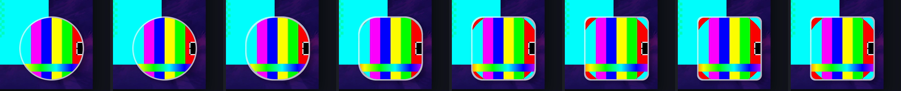
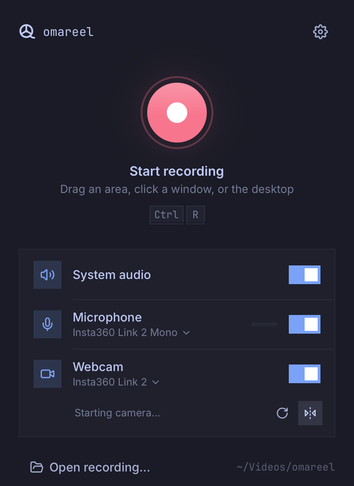
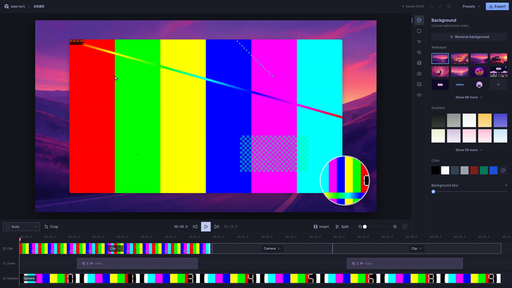

<title>omareel on Rune</title>
<meta name="claude:viewport-fit-sides" content="cover">
<link rel="preconnect" href="https://fonts.googleapis.com">
<link rel="preconnect" href="https://fonts.gstatic.com" crossorigin>
<link rel="stylesheet" href="https://fonts.googleapis.com/css2?family=Bricolage+Grotesque:opsz,wght@12..96,500;12..96,700&family=Source+Sans+3:ital,wght@0,400;0,600;1,400&family=JetBrains+Mono:wght@400;500&display=swap">
<style>
/* Layout: one reading column (about 66ch) with figures that widen to 1040px; a timeline ruler under the header borrowed from the editor. */
:root {
  --bg: #f5f6fa;
  --surface: #ffffff;
  --ink: #1b1e2b;
  --muted: #5a6075;
  --rule: #dcdfe9;
  --accent: #2a5fc0;
  --rune: #2a78d6;
  --qt: #eb6834;
  --good: #1f7a4d;
  --warn: #a4501b;
  --display: "Bricolage Grotesque", "Avenir Next", "Segoe UI", system-ui, sans-serif;
  --body: "Source Sans 3", "Segoe UI", system-ui, sans-serif;
  --mono: "JetBrains Mono", ui-monospace, "SFMono-Regular", Menlo, monospace;
}
@media (prefers-color-scheme: dark) {
  :root:not([data-theme="light"]) {
    --bg: #14151d; --surface: #1c1e29; --ink: #e7e9f3; --muted: #a2a7bd; --rule: #2e3142;
    --accent: #8fb0ff; --rune: #3987e5; --qt: #d95926; --good: #5fc18e; --warn: #f0995e;
    color-scheme: dark;
  }
}
:root[data-theme="dark"] {
  --bg: #14151d; --surface: #1c1e29; --ink: #e7e9f3; --muted: #a2a7bd; --rule: #2e3142;
  --accent: #8fb0ff; --rune: #3987e5; --qt: #d95926; --good: #5fc18e; --warn: #f0995e;
  color-scheme: dark;
}
* { box-sizing: border-box; }
body {
  background: var(--bg); color: var(--ink);
  font: 400 1.0625rem/1.6 var(--body);
  padding-left: max(16px, env(safe-area-inset-left, 0px));
  padding-right: max(16px, env(safe-area-inset-right, 0px));
  padding-block: 2.5rem 4rem;
}
.page { max-width: 1040px; margin: 0 auto; display: grid; gap: 3.5rem; }
.col { max-width: 44rem; }
h1, h2, h3 { font-family: var(--display); text-wrap: balance; margin: 0; line-height: 1.15; }
h1 { font-size: clamp(2.4rem, 6vw, 3.6rem); font-weight: 700; letter-spacing: -0.02em; }
h2 { font-size: 1.65rem; font-weight: 700; letter-spacing: -0.01em; }
h3 { font-size: 1.1rem; font-weight: 500; }
p { margin: 0; }
.stack { display: grid; gap: 1rem; }
.eyebrow { font: 500 0.78rem/1.4 var(--mono); letter-spacing: 0.06em; text-transform: uppercase; color: var(--muted); }
.lede { font-size: 1.22rem; line-height: 1.55; }
.muted { color: var(--muted); }
code, .mono { font-family: var(--mono); font-size: 0.88em; }
a { color: var(--accent); }

/* Header ruler, like the editor's timeline */
.ruler { position: relative; height: 26px; border-bottom: 1px solid var(--rule); margin-top: 1.25rem;
  background: repeating-linear-gradient(to right, var(--rule) 0 1px, transparent 1px 10%) bottom / 100% 9px no-repeat; }
.ruler span { position: absolute; top: 0; font: 400 0.68rem var(--mono); color: var(--muted); transform: translateX(2px); }
.ruler .head { position: absolute; bottom: -4px; width: 2px; height: 22px; background: var(--qt); left: 0; }

/* Key results */
.keys { display: grid; grid-template-columns: repeat(auto-fit, minmax(14rem, 1fr)); gap: 1px; background: var(--rule); border: 1px solid var(--rule); border-radius: 10px; overflow: hidden; }
.key { background: var(--surface); padding: 1.1rem 1.2rem; display: grid; gap: 0.3rem; align-content: start; }
.key b { font: 700 1.9rem/1.1 var(--display); font-variant-numeric: tabular-nums; }
.key small { color: var(--muted); font-size: 0.92rem; line-height: 1.4; }

/* Chart */
.chart { display: grid; gap: 1.1rem; }
.legend { display: flex; gap: 1.25rem; flex-wrap: wrap; font-size: 0.92rem; color: var(--muted); }
.legend i { display: inline-block; width: 12px; height: 12px; border-radius: 3px; margin-right: 6px; vertical-align: -1px; }
.group { display: grid; grid-template-columns: minmax(9rem, 15rem) 1fr; gap: 0.35rem 1rem; align-items: center; }
.group .label { grid-row: span 2; font-size: 0.98rem; line-height: 1.3; }
.group .label small { display: block; color: var(--muted); font-size: 0.84rem; }
.track { position: relative; height: 18px; }
.bar { position: absolute; left: 0; top: 0; bottom: 0; border-radius: 0 4px 4px 0; cursor: default; outline-offset: 2px; }
.bar.rune { background: var(--rune); }
.bar.qt { background: var(--qt); }
.bar:focus-visible { outline: 2px solid var(--ink); }
.val { position: absolute; top: 50%; transform: translateY(-50%); font: 500 0.8rem var(--mono); color: var(--ink); white-space: nowrap; padding-left: 8px; font-variant-numeric: tabular-nums; }
.axis { display: grid; grid-template-columns: minmax(9rem, 15rem) 1fr; gap: 1rem; }
.axis .ticks { position: relative; height: 1.2rem; border-top: 1px solid var(--rule); }
.axis .ticks span { position: absolute; top: 4px; transform: translateX(-50%); font: 400 0.72rem var(--mono); color: var(--muted); }
.tip { position: fixed; z-index: 5; pointer-events: none; background: var(--ink); color: var(--bg); font-size: 0.85rem; line-height: 1.35; padding: 0.45rem 0.6rem; border-radius: 6px; max-width: 16rem; }
@media (max-width: 560px) {
  .group, .axis { grid-template-columns: 1fr; }
  .group .label { grid-row: auto; }
  .axis > :first-child { display: none; }
}

/* Media */
figure { margin: 0; display: grid; gap: 0.6rem; }
figcaption { font-size: 0.92rem; color: var(--muted); max-width: 44rem; }
.frame { border: 1px solid var(--rule); border-radius: 10px; overflow: hidden; background: #1b1d26; }
.frame video, .frame img { display: block; width: 100%; height: auto; max-width: 100%; }
.strip { overflow-x: auto; border-radius: 10px; border: 1px solid var(--rule); background: #1b1d26; }
.strip img { display: block; max-width: none; width: 980px; height: auto; }
.pair { display: grid; grid-template-columns: 1fr 2fr; gap: 1.25rem; align-items: start; }
@media (max-width: 720px) { .pair { grid-template-columns: 1fr; } }
.pair .frame { background: transparent; }

ul.plain { margin: 0; padding-left: 1.1rem; display: grid; gap: 0.5rem; }

/* Tables */
.scroll { overflow-x: auto; border: 1px solid var(--rule); border-radius: 10px; background: var(--surface); }
table { border-collapse: collapse; width: 100%; font-size: 0.95rem; font-variant-numeric: tabular-nums; }
th, td { padding: 0.55rem 0.85rem; text-align: right; border-bottom: 1px solid var(--rule); white-space: nowrap; }
th:first-child, td:first-child { text-align: left; }
thead th { font: 500 0.74rem/1.3 var(--mono); text-transform: uppercase; letter-spacing: 0.05em; color: var(--muted); }
tbody tr:last-child td { border-bottom: 0; }
td.win { font-weight: 600; }
.sub td { color: var(--muted); }

/* Costs */
.costs { display: grid; gap: 1px; background: var(--rule); border: 1px solid var(--rule); border-radius: 10px; overflow: hidden; }
.cost { background: var(--surface); padding: 1rem 1.2rem; display: grid; grid-template-columns: 10rem 1fr; gap: 0.25rem 1.25rem; }
.cost .num { font: 500 0.95rem/1.4 var(--mono); color: var(--warn); }
.cost .num small { display: block; color: var(--muted); font-family: var(--body); font-size: 0.82rem; }
.cost h3 { margin-bottom: 0.2rem; }
.cost p { color: var(--muted); font-size: 0.97rem; }
@media (max-width: 560px) { .cost { grid-template-columns: 1fr; } }

details { border-top: 1px solid var(--rule); padding-top: 1rem; }
summary { cursor: pointer; font-weight: 600; }
details .stack { margin-top: 0.9rem; }
pre { margin: 0; overflow-x: auto; background: var(--surface); border: 1px solid var(--rule); border-radius: 8px; padding: 0.8rem 1rem; font: 0.8rem/1.5 var(--mono); }
@media (prefers-reduced-motion: reduce) { * { scroll-behavior: auto; } }
</style>

<main class="page">
  <header class="stack">
    <p class="eyebrow">Toolkit rewrite · measured 8 Nov 2026 · foundry2, Intel Iris Xe</p>
    <h1>omareel on Rune</h1>
    <p class="lede col">We rewrote omareel's whole interface in Rune, a new Rust GPU toolkit, and kept the core and the recorder unchanged. This covers the launcher, the recording bar, the camera bubble, the editor and the export. The Rune build opens every window in about half the time Qt takes, and edits to the video ease into place instead of jumping. It plays and exports at the same speed. The cost is GPU time on integrated graphics, and seeking is slower until we move video decoding in-process.</p>
    <div class="ruler" aria-hidden="true">
      <span style="left:0">00:00.0</span><span style="left:20%">00:00.2</span><span style="left:40%">00:00.4</span><span style="left:60%">00:00.6</span><span style="left:80%">00:00.8</span>
      <i class="head"></i>
    </div>
  </header>

  <section class="keys" aria-label="Key results">
    <div class="key"><span class="eyebrow">Editor opens</span><b>0.27 s</b><small>Qt: 0.60 s. The video is up at 0.34 s, against 0.73 s.</small></div>
    <div class="key"><span class="eyebrow">Launcher appears</span><b>93 ms</b><small>Qt: 238 ms.</small></div>
    <div class="key"><span class="eyebrow">Editor after Stop</span><b>0.36 s</b><small>Qt: 0.71 s. This includes 164 ms of shared recorder work.</small></div>
    <div class="key"><span class="eyebrow">App memory, idle</span><b>241 MB</b><small>Qt: 305 MB. During 4K playback it's 310 MB against 561 MB.</small></div>
  </section>

  <section class="stack">
    <div class="stack col">
      <p class="eyebrow">How quickly things appear</p>
      <h2>Every window in the recording loop opens faster</h2>
      <p>Both builds share the same Rust core and recorder: the region picker, the capture daemon and the finishing of a recording are identical code. So these differences come from the UI processes alone. Times are the median of 5 warm runs in a nested Hyprland at 1920×1080, measured from the action until Hyprland maps the window.</p>
    </div>
    <div class="chart" id="chart" role="img" aria-label="Time for each window to appear, Qt against Rune, in milliseconds">
      <div class="legend"><span><i style="background:var(--qt)"></i>Qt (current)</span><span><i style="background:var(--rune)"></i>Rune</span></div>
    </div>
    <p class="muted col" style="font-size:0.92rem">The recording bar is the one window that improves less: most of its 300 ms is the shared recorder starting up before the bar process is launched (Qt 346 ms, Rune 308 ms after the click).</p>
  </section>

  <section class="stack">
    <div class="stack col">
      <p class="eyebrow">Edits that move</p>
      <h2>Changes ease into place</h2>
      <p>Rune animates layout changes by default, and the port uses that wherever Qt jumps. While paused, every change to the composition springs into place:</p>
      <ul class="plain">
        <li>the camera morphing between round, square and rectangle;</li>
        <li>its size and position;</li>
        <li>padding, roundness and shadow;</li>
        <li>zoom levels.</li>
      </ul>
      <p>In Qt the same edits land in a single frame: its composition has no animations. During playback and export nothing is smoothed, so the video stays exact.</p>
    </div>
    <figure>
      <div class="frame"><video src="images/full/edits.mp4" poster="images/full/edits-poster.jpg" autoplay muted loop playsinline controls width="1280" height="720"></video></div>
      <figcaption>Six seconds of the Rune editor driven by a script: the camera goes square, then rectangle, then round again, and padding and roundness are dragged. Rendered headless by Rune at 60 fps.</figcaption>
    </figure>
    <figure>
      <div class="strip"></div>
      <figcaption>The camera bubble going from round to square, frames 0 to 0.6 s after the click.</figcaption>
    </figure>
    <p class="col">Also new: a slider's knob springs to where you click, where Qt's jumps, and a toast names each edit as you make it, then slides away. Dialogs, popups and buttons animate as they did in Qt.</p>
    <div class="pair">
      <figure><div class="frame"></div><figcaption>The launcher.</figcaption></figure>
      <figure><div class="frame"></div><figcaption>The editor. The port reproduces the Qt design element for element; what changed is how it moves and how fast it opens.</figcaption></figure>
    </div>
  </section>

  <section class="stack">
    <div class="stack col">
      <p class="eyebrow">Playback and export</p>
      <h2>As smooth and as fast</h2>
      <p>The editor plays the recording for 10 s while we count its frames from the compositor's side. Both apps hold 60 frames a second with the same 16.7 ms median pacing, and Rune drops fewer frames at 4K. Export renders the same 600 frames to a 1080p MP4.</p>
    </div>
    <div class="scroll">
      <table>
        <thead><tr><th></th><th>Qt</th><th>Rune</th></tr></thead>
        <tbody>
          <tr><td>Playback, 1080p recording: frames/s</td><td>59.8</td><td>59.4</td></tr>
          <tr class="sub"><td>&nbsp;&nbsp;frame time p95 / dropped frames</td><td>16.9 ms / 10</td><td>17.4 ms / 7</td></tr>
          <tr><td>Playback, 4K recording: frames/s</td><td>59.7</td><td>59.4</td></tr>
          <tr class="sub"><td>&nbsp;&nbsp;frame time p95 / dropped frames</td><td>16.9 ms / 40</td><td class="win">17.5 ms / 7</td></tr>
          <tr><td>App memory during playback, 1080p / 4K</td><td>326 / 561 MB</td><td class="win">253 / 310 MB</td></tr>
          <tr><td>Export, 1080p recording</td><td>105.6 frames/s</td><td class="win">111.5 frames/s</td></tr>
          <tr><td>Export, 4K recording</td><td class="win">57.2 frames/s</td><td>52.6 frames/s</td></tr>
          <tr><td>Export without a display</td><td>43 frames/s (software)</td><td class="win">same as with one</td></tr>
        </tbody>
      </table>
    </div>
  </section>

  <section class="stack">
    <div class="stack col">
      <p class="eyebrow">What it costs</p>
      <h2>Three things to fix before it ships</h2>
    </div>
    <div class="costs">
      <div class="cost">
        <div class="num">53% vs 8%<small>GPU render engine, Iris Xe, playing 1080p</small></div>
        <div><h3>GPU time on integrated graphics</h3><p>Rune redraws the whole window every frame. About half of that is the side panel and timeline, which don't change while the video plays. Damage tracking in Rune would remove that half. On NVIDIA (n1x) the earlier spike drew slightly less GPU power than Qt (9.2 W against 9.7 W), so this matters for Intel and AMD laptops.</p></div>
      </div>
      <div class="cost">
        <div class="num">93 ms vs 13 ms<small>click on the timeline to the new frame</small></div>
        <div><h3>Seeking</h3><p>The port starts an ffmpeg process for each seek, where Qt keeps its decoder open in-process. Moving decoding into the app, as the export already does, fixes this. It also brings Play's start in line (102 ms against 88).</p></div>
      </div>
      <div class="cost">
        <div class="num">543 MB vs 305 MB<small>idle, counting the decoder processes</small></div>
        <div><h3>Memory held by the video decoders</h3><p>The app itself is lighter (241 MB), but the two ffmpeg processes hold about 300 MB while paused. The in-process decoder fixes this too.</p></div>
      </div>
    </div>
    <p class="col muted">Also: Rune is weeks old, and the port pins a development revision. Its own bugs so far were small (overlays ignore <code>Tx::quit</code>; colours are linear light) and had easy workarounds.</p>
  </section>

  <section class="stack col">
    <p class="eyebrow">Footprint</p>
    <h2>One language, no toolkit runtime</h2>
    <p>The Qt build spreads its UI across about 15,300 lines in three languages: QML and JavaScript, C++, and the Rust bridges that connect them. The Rune port is about 13,700 lines of Rust, measurement tooling included, calling the core directly with no bridge. It ships as one 41 MB binary that links 13 libraries, mostly FFmpeg and graphics. Qt's is 17 MB but needs the Qt 6 runtime: about 42 MB of libraries before QML modules and plugins.</p>
  </section>

  <details class="col">
    <summary>How this was measured</summary>
    <div class="stack">
      <p><b>Machine:</b> foundry2: Intel Raptor Lake-P, Iris Xe, Mesa, Hyprland 0.57.0. Both apps ran in a nested Hyprland on a 1920×1080@60 headless output, with the capture-exclusion plugin built for this Hyprland. Every run started once the machine had been under 8% CPU for 6 seconds.</p>
      <p><b>Builds:</b> Qt <code>omareel</code> and Rune <code>omareel-rune-spike</code>, both release builds from the same tree (branch <code>t3/rune-spike-n1x</code>, <code>4fd1696</code>). Rune is pinned at dev revision <code>8ee3095</code>.</p>
      <p><b>Opening the editor:</b> 6 launches each. Window time comes from the app's own Wayland log, its first commit with a buffer. Video time is the first screenshot showing the recording. Seek and Play times run from the app receiving the click to the first screenshot that changes.</p>
      <p><b>Recording loop:</b> 6 loops each: launcher, Ctrl+R, click the desktop, record 5 s with the countdown, <code>record --stop</code>. A watcher logs when Hyprland maps each window.</p>
      <p><b>Playback and export:</b> 3 runs each. Frame pacing comes from the window's commits. CPU and memory come from <code>/proc</code>; GPU render time from DRM fdinfo. Package power couldn't be read without root.</p>
      <p><b>Not yet re-run:</b> the NVIDIA laptop (n1x). There, the earlier partial port opened the editor in 0.68 s against Qt's 2.74 s, most of which is Qt Multimedia probing NVIDIA's encoders.</p>
      <p>Full tables, the GPU breakdown and the commands are in <code>spikes/rune/RESULTS-full-port.md</code>.</p>
    </div>
  </details>
</main>

<script>
(function () {
  var rows = [
    { label: "Launcher appears", note: "from launch", qt: 238, rune: 93 },
    { label: "Editor window", note: "from launch", qt: 602, rune: 271 },
    { label: "Editor showing the video", note: "from launch", qt: 733, rune: 335 },
    { label: "Recording bar", note: "from the click in the picker", qt: 346, rune: 308 },
    { label: "Editor after Stop", note: "recorder finishing + editor launch", qt: 709, rune: 356 }
  ];
  var max = 900, chart = document.getElementById("chart");
  var tip = document.createElement("div"); tip.className = "tip"; tip.hidden = true; document.body.appendChild(tip);
  function show(e, text) {
    tip.textContent = text; tip.hidden = false;
    var r = e.target.getBoundingClientRect();
    var x = (e.clientX || r.left + r.width / 2) + 12, y = (e.clientY || r.top) - 40;
    tip.style.left = Math.min(x, window.innerWidth - tip.offsetWidth - 12) + "px";
    tip.style.top = Math.max(8, y) + "px";
  }
  function hide() { tip.hidden = true; }
  rows.forEach(function (row) {
    var g = document.createElement("div"); g.className = "group";
    var l = document.createElement("div"); l.className = "label";
    l.innerHTML = row.label + "<small>" + row.note + "</small>";
    g.appendChild(l);
    [["qt", "Qt"], ["rune", "Rune"]].forEach(function (s) {
      var t = document.createElement("div"); t.className = "track";
      var b = document.createElement("div"); b.className = "bar " + s[0]; b.tabIndex = 0;
      var v = row[s[0]], pct = v / max * 100;
      b.style.width = pct + "%";
      var text = row.label + ", " + s[1] + ": " + v + " ms" + (s[0] === "rune" ? " (" + (row.qt / row.rune).toFixed(1) + "× faster)" : "");
      b.setAttribute("aria-label", text);
      b.addEventListener("mousemove", function (e) { show(e, text); });
      b.addEventListener("mouseleave", hide);
      b.addEventListener("focus", function (e) { show(e, text); });
      b.addEventListener("blur", hide);
      var val = document.createElement("span"); val.className = "val"; val.style.left = pct + "%";
      val.textContent = v + " ms";
      t.appendChild(b); t.appendChild(val); g.appendChild(t);
    });
    chart.appendChild(g);
  });
  var axis = document.createElement("div"); axis.className = "axis"; axis.setAttribute("aria-hidden", "true");
  var ticks = '<div class="ticks">';
  for (var ms = 0; ms < max; ms += 200) ticks += '<span style="left:' + (ms / max * 100) + '%' + (ms === 0 ? ';transform:none' : '') + '">' + ms + " ms</span>";
  axis.innerHTML = "<div></div>" + ticks + "</div>";
  chart.appendChild(axis);
})();
</script>
